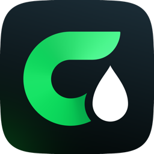

CarbuGoPolitique de confidentialité
Dernière mise à jour : 25 septembre 2026
CarbuGo se consulte sans compte. Votre position sert à trouver les stations autour de vous : elle n’est jamais envoyée à nos serveurs.
Qui est responsable de vos données
L’application CarbuGo est éditée par Yamin Alouache, responsable du traitement des données. Pour toute question sur vos données : discount421@outlook.fr.
En bref
- Aucun compte n’est nécessaire pour consulter les prix, les favoris ou les alertes.
- Vos favoris, vos alertes, vos carburants et votre véhicule restent sur votre iPhone. Votre position n’est jamais envoyée à nos serveurs.
- Aucune publicité, aucun traceur publicitaire, aucun outil de mesure d’une autre entreprise, aucune revente de données.
- Un compte n’est demandé que pour signaler une information à la communauté ; vous pouvez le supprimer à tout moment depuis l’application.
Ce qui reste sur votre iPhone
- Votre position : elle sert à afficher les stations autour de vous, à calculer les distances et le Meilleur choix, et à vérifier que vous êtes bien à une station avant un signalement. Ces calculs se font sur votre iPhone : vos coordonnées ne sont jamais envoyées à nos serveurs (seuls les itinéraires calculés par Apple l’utilisent, voir plus bas).
- Vos réglages : carburants choisis, stations favorites, alertes prix, véhicule (consommation, réservoir), volume du plein, apparence, application GPS préférée.
- Les prix déjà téléchargés, pour que l’app fonctionne aussi sans connexion.
Ces données sont effacées si vous supprimez l’application.
Ce qui quitte votre iPhone
Les prix officiels
CarbuGo télécharge le fichier national des prix publié par l’État (prix-carburants.gouv.fr). Cette demande ne contient ni votre position ni aucun identifiant.
Les informations de la communauté
Pour afficher les signalements des autres utilisateurs, l’app envoie à notre serveur les numéros officiels des stations de la zone consultée (environ 10 km autour du lieu affiché, ou le long de votre trajet). Ils ne contiennent pas vos coordonnées et ne sont pas enregistrés : ils servent seulement à répondre à la demande.
Votre compte (facultatif)
Vous pouvez vous connecter avec Apple ou avec votre adresse e-mail. Nous conservons alors :
- un identifiant de compte (et, avec Apple, l’identifiant fourni par Apple ; CarbuGo ne demande ni votre nom ni votre adresse e-mail à Apple) ;
- votre adresse e-mail, si vous vous connectez par e-mail, pour vous envoyer le code de connexion.
Votre adresse e-mail n’est jamais montrée aux autres utilisateurs.
Vos signalements et vos réponses
Quand vous signalez une information (prix incorrect, carburant indisponible, station fermée) ou que vous répondez à un signalement, nous enregistrons : la station, le carburant, le type de signalement, le prix constaté le cas échéant, la date, votre compte, et le fait que vous étiez à proximité de la station. Vos coordonnées ne sont pas envoyées : la vérification sur place se fait sur votre iPhone.
Pour lutter contre les abus (faux comptes, signalements en série), nous enregistrons aussi une empreinte calculée à partir de l’adresse IP de la connexion (mélangée à une clé secrète), jamais l’adresse elle-même.
Les autres utilisateurs voient le signalement (station, information signalée, date, nombre de confirmations), jamais son auteur.
Les statistiques anonymes
Si l’option est activée (elle l’est par défaut, et se désactive dans Plus › Réglages), CarbuGo envoie de simples compteurs, additionnés pour tous les utilisateurs : utilisation de l’app (par jour, semaine et mois, avec le nombre de jours depuis la précédente utilisation), installations, version de l’app, compte connecté ou non, recherches, fiches de station ouvertes, « Y aller » (et le choix affiché : Meilleur choix, Moins cher ou Plus proche), trajets « Sur ma route », alertes prix créées, favoris ajoutés, carburant principal, erreurs de chargement. Ces compteurs ne contiennent aucun identifiant, ni votre position, vos recherches, vos destinations, vos stations ou vos favoris. Pour éviter les envois abusifs, une empreinte calculée à partir de l’adresse IP est gardée environ 2 jours, séparément des compteurs.
Les services d’Apple
La carte, la recherche d’adresse et les itinéraires utilisent les services de cartographie d’Apple (Plans). Pour calculer un itinéraire, votre point de départ est envoyé à Apple : arrondi à environ 1 km pour le Meilleur choix, exact pour « Sur ma route ». Le texte que vous tapez pour chercher un lieu est envoyé à Apple pour afficher des suggestions. Ces données sont traitées par Apple selon sa propre politique de confidentialité : nous n’y avons pas accès.
Votre application GPS
« Y aller » ouvre Plans, Google Maps ou Waze avec les coordonnées de la station choisie. Ce que fait ensuite cette application relève de son éditeur.
Pourquoi nous utilisons ces données
- Faire fonctionner l’application : connexion à votre compte, signalements et confirmations de la communauté.
- Lutter contre la fraude et les abus.
- Mesurer, de façon anonyme, l’usage de l’app et les erreurs, pour l’améliorer.
Nous n’utilisons pas vos données pour de la publicité ni pour vous suivre sur d’autres applications ou sites, et nous ne les vendons pas. Les bases juridiques sont l’exécution du service que vous demandez (compte, signalements) et notre intérêt légitime (sécurité, statistiques anonymes, que vous pouvez désactiver).
Combien de temps nous les gardons
- Compte, adresse e-mail et identifiant : jusqu’à la suppression de votre compte.
- Signalements et réponses : un signalement n’est plus affiché 24 heures après sa dernière confirmation (12 heures pour une fermeture) ; il est ensuite supprimé du serveur lors du nettoyage suivant (au plus tôt 48 heures après). Tous sont effacés si vous supprimez votre compte.
- Profil de contributeur (niveau de fiabilité, compteurs) : jusqu’à la suppression de votre compte.
- Statistiques : uniquement des totaux par jour, sans lien avec une personne.
Qui y a accès
Seul l’éditeur de CarbuGo, pour faire fonctionner et modérer le service. Les données du serveur sont hébergées par Supabase, notre prestataire technique, dans l’Union européenne (Irlande). Les e-mails de connexion sont envoyés par Brevo (Sendinblue, France), qui ne reçoit que votre adresse e-mail et le code. Comme tout service en ligne, il tient des journaux techniques de connexion (adresse IP, date, requête) pendant une durée limitée, pour la sécurité et le bon fonctionnement du service. Nous ne vendons pas vos données et ne les partageons avec aucune autre entreprise que ces prestataires.
Vos droits
Vous pouvez accéder à vos données, les rectifier, les supprimer ou vous opposer à leur traitement. Le plus simple : supprimez votre compte depuis l’application (voir comment), ou écrivez-nous à discount421@outlook.fr. Vous pouvez aussi adresser une réclamation à la CNIL (cnil.fr).
Modifications
Si cette politique change, la nouvelle version sera publiée sur cette page, avec sa date.